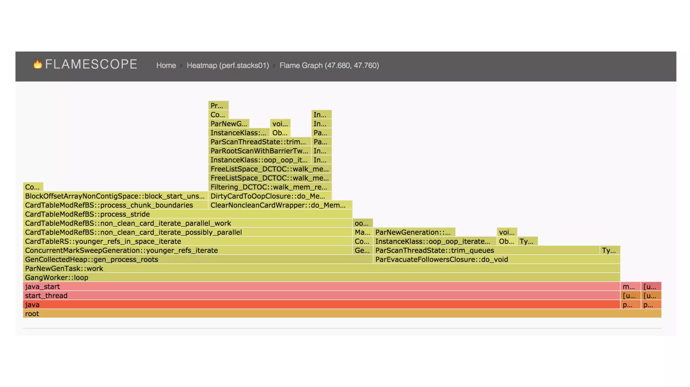
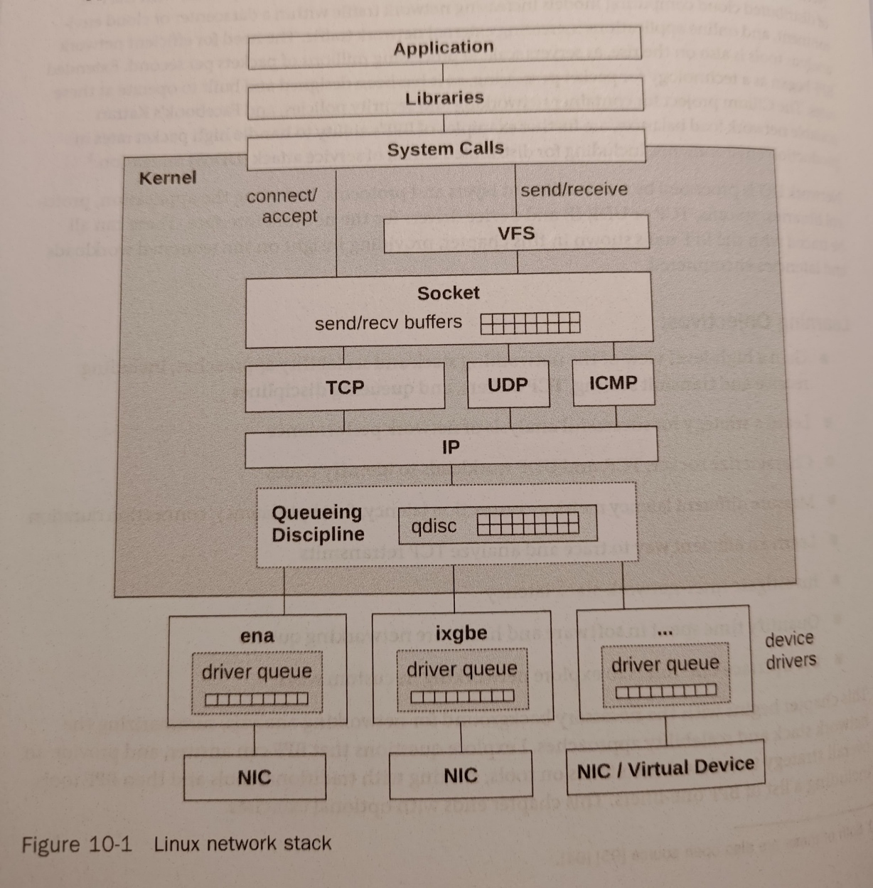

eBPF
wdrożenie do analizy wydajności systemów i aplikacji
¯\_(ツ)_/¯ -> ¯\(°_o)/¯
Przedsmak
Będzie dużo teorii, sorry :'<
BPF == Nowa klasa aplikacji!
(づ｡◕‿‿◕｡)づ Wykonujemy kod z poziomu kernela
Observability, tracing, forwarding, security
Plan prezentacji
- Intro do kernela
- Analiza wydajności, od zera
- Zasoby systemowe i punkty pomiaru
- 60 second win™
- BPF - ziemniaczki
- BPF - mięsko
- BPF - życiowe przykłady
- BPF - narzędzia
Po dzisiejszej prezentacji...
- Wskoczycie na hype train BPF
- Zyskacie szerszy obraz deployowanych aplikacji
- Poznacie systemowe narzędzia do analizy, profilowania, debugu
- Kernel pozostanie blisko Waszego serca
- Zyskacie dobre podstawy do dalszego samodoskonalenia
Prezentacja mocno inspirowana materiałami Brandon'a Gregg'a m. in.

Kernel
µ-ankieta
Kernel
https://developer.ibm.com/articles/l-linux-kernel/ ©
Kernel internals

https://developer.ibm.com/articles/l-linux-kernel/ ©
Kernel storage

https://developer.ibm.com/articles/l-linux-kernel/ ©
Kernel space / user space

https://en.wikipedia.org/wiki/User_space_and_kernel_space ©
Syscalls, grupy (approx)
| Grupa | Przykłady |
|---|---|
| Zarządzanie procesami | exec, fork, kill, mmap, futex |
| Zarządzanie plikami | open, read, rmdir |
| Zarządzanie urządzeniami | ioctl, ioperm |
| Zarządzanie "informacjami" | gethostname, getpid, clock_gettime |
| Komunikacja | pipe, send, connect, listen, dup |
| Uprawnienia | capset, chmod, chown |
Analiza performance - intro!
Zliczanie, samplowanie, traceowanie, benchmarkowanie
Co daje nam kernel
- perf_event
- kprobe, uprobe
- tracepoint, USDT (user statically defined tracing)
- PMC(performance monitoring counters)
Liczniki sprzętowe, PMC
PMC, performance monitoring counters
Perf_event
kernel tracepoints, user USDT
Kod wymaga zadeklarowania tracepointu
Statyczna nazwa, statyczne argumenty
W momencie kompilacji w miejscu TC znajduje się NOP(prawie zerowy narzut)
Przy aktywacji TC NOP zamieniany jest na INT3
Wstrzyknięta zostaje funkcja "trampolina"
Po deaktywacji TC przywrócony jest NOP i usunięta trampolina
https://leezhenghui.github.io/linux/2019/03/05/exploring-usdt-on-linux.htmlTracepoint in kernel
Przyda się za kilka slajdów :)
// KERNEL-6.5.0-35/include/trace/events/sched.h +372
/*
* Tracepoint for kernel_clone:
*/
TRACE_EVENT(sched_process_fork,
TP_PROTO(struct task_struct *parent, struct task_struct *child),
TP_ARGS(parent, child),
TP_STRUCT__entry(
__array( char, parent_comm, TASK_COMM_LEN )
__field( pid_t, parent_pid )
__array( char, child_comm, TASK_COMM_LEN )
__field( pid_t, child_pid )
),
TP_fast_assign(
memcpy(__entry->parent_comm, parent->comm, TASK_COMM_LEN);
__entry->parent_pid = parent->pid;
memcpy(__entry->child_comm, child->comm, TASK_COMM_LEN);
__entry->child_pid = child->pid;
),
TP_printk("comm=%s pid=%d child_comm=%s child_pid=%d",
__entry->parent_comm, __entry->parent_pid,
__entry->child_comm, __entry->child_pid)
);
Przykład USDT
rikkt0r@nasa.gov:/usr/lib$ readelf -n /lib/x86_64-linux-gnu/libc.so.6
Displaying notes found in: .note.gnu.property
Owner Data size Description
GNU 0x00000020 NT_GNU_PROPERTY_TYPE_0
Properties: x86 feature: IBT, SHSTK
x86 ISA needed: x86-64-baseline
Displaying notes found in: .note.gnu.build-id
Owner Data size Description
GNU 0x00000014 NT_GNU_BUILD_ID (unique build ID bitstring)
Build ID: 490fef8403240c91833978d494d39e537409b92e
Displaying notes found in: .note.ABI-tag
Owner Data size Description
GNU 0x00000010 NT_GNU_ABI_TAG (ABI version tag)
OS: Linux, ABI: 3.2.0
Displaying notes found in: .note.stapsdt
Owner Data size Description
[...]
stapsdt 0x0000004c NT_STAPSDT (SystemTap probe descriptors)
Provider: libc
Name: pthread_start
Location: 0x000000000009491a, Base: 0x00000000001e3e28, Semaphore: 0x0000000000000000
Arguments: 8@%rbx 8@1600(%rbx) 8@1608(%rbx)
stapsdt 0x00000053 NT_STAPSDT (SystemTap probe descriptors)
Provider: libc
Name: pthread_create
Location: 0x000000000009511a, Base: 0x00000000001e3e28, Semaphore: 0x0000000000000000
Arguments: 8@%rax 8@8(%rsp) 8@16(%rsp) 8@24(%rsp)
stapsdt 0x00000031 NT_STAPSDT (SystemTap probe descriptors)
Provider: libc
Name: pthread_join
Location: 0x000000000009654b, Base: 0x00000000001e3e28, Semaphore: 0x0000000000000000
Arguments: 8@%rdi
stapsdt 0x00000045 NT_STAPSDT (SystemTap probe descriptors)
Provider: libc
Name: pthread_join_ret
Location: 0x000000000009659c, Base: 0x00000000001e3e28, Semaphore: 0x0000000000000000
Arguments: 8@%rbx -4@%r12d 8@%r13
stapsdt 0x00000033 NT_STAPSDT (SystemTap probe descriptors)
Provider: libc
Name: mutex_acquired
Location: 0x0000000000096b4d, Base: 0x00000000001e3e28, Semaphore: 0x0000000000000000
Arguments: 8@%rbp
[...]
kprobe, uprobe - dynamic tracing
Zapinamy się dynamicznie na funkcje kernela/aplikacji
Przyjmujemy wszystkie argumenty funkcji
Kod nie wymaga żadnej modyfikacji
Kernel w locie patchuje adres funkcji na INT3
Jeśli interrupt był z powodu k/uprobe, wykonywany jest kod probe
Dla kprobe to tyle, dla uprobe tworzona jest funkcja trampolina przez którą przelatuje wątek
co możemy z tego ciekawego zrobić, np.
- Rozkład w czasie
- Statystyki
- Histogram
- Flame graph (& chart*)
- Heatmap/Flamescope
Rozkład w czasie
 https://grafana.com/grafana/ example
https://grafana.com/grafana/ example
Histogram
root@nasa.gov:/home/rikkt0r# runqlat.bt
Attaching 5 probes...
Tracing CPU scheduler... Hit Ctrl-C to end.
^C
@usecs:
[0] 18684 |@@@@@@@@@@@@@@@@@ |
[1] 56506 |@@@@@@@@@@@@@@@@@@@@@@@@@@@@@@@@@@@@@@@@@@@@@@@@@@@@|
[2, 4) 40787 |@@@@@@@@@@@@@@@@@@@@@@@@@@@@@@@@@@@@@ |
[4, 8) 17662 |@@@@@@@@@@@@@@@@ |
[8, 16) 22820 |@@@@@@@@@@@@@@@@@@@@@ |
[16, 32) 29038 |@@@@@@@@@@@@@@@@@@@@@@@@@@ |
[32, 64) 9437 |@@@@@@@@ |
[64, 128) 6672 |@@@@@@ |
[128, 256) 4357 |@@@@ |
[256, 512) 3135 |@@ |
[512, 1K) 2416 |@@ |
[1K, 2K) 1652 |@ |
[2K, 4K) 647 | |
[4K, 8K) 220 | |
[8K, 16K) 19 | |
[16K, 32K) 1 | |
Flame graph
 https://www.brendangregg.com/FlameGraphs/cpu-bash-flamegraph.svg
https://www.brendangregg.com/FlameGraphs/cpu-bash-flamegraph.svg
Flame graph JVM + separate kernel
https://www.brendangregg.com/FlameGraphs/example-perf.svgHeatmap; Flame scope 1/3

Heatmap; Flame scope 2/3
Heatmap; Flame scope 3/3

 https://www.brendangregg.com/usemethod.html ©
https://www.brendangregg.com/usemethod.html ©
Zasoby mierzalne
(ciekawsze rozkminy w ramach zagrzania do BPF)
- CPU
- Pamięć
- Dysk/system plików
- Sieć
- I inne
Kradnę schematy z książki "BPF Performance Tools"; Brendan Gregg
(Nie znalazłem ładniejszych w sieci)
CPU - stany zadań/wątków
 Shamelessly stolen from Chapter 6, BPF Performance Tools
Shamelessly stolen from Chapter 6, BPF Performance Tools
CPU - coś niecodziennie ciekawego?
- Może stosy wykonań? captain obvious •_•)
- Gdzie CPU przesiaduje? U usera czy w kernelu?
- Jakie mamy argumenty syscalli?
- Jak długo wątki się wykonują/czekają w kolejce?
- Max długość kolejki?
- Dla laptopów: czy procek się nie skaluje w dół?
- Ezoteryka hypercomputingu - cache procesora ;) ?
Pamięć
 Shamelessly stolen from Chapter 7, BPF Performance Tools
Shamelessly stolen from Chapter 7, BPF Performance Tools
Pamięć
 Shamelessly stolen from Chapter 7, BPF Performance Tools
Shamelessly stolen from Chapter 7, BPF Performance Tools
Pamięć - ciekawe pytania
- Które procesy swapują?
- Jakie stacki prowadzą do "page fault"?
- A może by wykryć pamięć bez referencji? (memleak!)
- Ile czasu proces czeka na odzyskanie pamięci od page cache?
- Ezoteryka - podgląd zarządzania pamięcią kernela (slab model)
Sieć
 Shamelessly stolen from Chapter 10, BPF Performance ToolsSieć - ciekawe pytania
- Problemy z L3? L4? Socketami?
- Dlaczego pakiety są gubione?
- Latencja TCP? Długość trwania połączenia?
- Ile pakiety leżakują w kolejce?
FS - stack I/O
 Shamelessly stolen from Chapter 8, BPF Performance Tools
Shamelessly stolen from Chapter 8, BPF Performance Tools
FS - caches
Shamelessly stolen from Chapter 8, BPF Performance ToolsFS - ciekawe pytania
- Które procesy gdzie się odwołują?
- Czasy dostępu do plików? Z jakego powodu?
- Jaki mamy cache hit ratio?
- Kiedy i kto czyści "dirty pages"?(tj. zapisuje dane)
- Ezoteryka - prefetch (wczytaj zanim proces potrzebuje)
Urządzenia blokowe - stack I/O
 Shamelessly stolen from Chapter 9, BPF Performance Tools
Shamelessly stolen from Chapter 9, BPF Performance Tools
Urządzenia blokowe - ciekawe pytania
- Jakie komendy (nvme, scsi, sata) zostały wysłane?
- Ile jest i jakich zapytań do dysku?
- Latencja?
- Błędy? Timeouty?
- Rozkład odczytów sekwencyjnych/losowych?
- Ezoteryka - tym razem brak
Security - ciekawe pytania
- Jaki proces gdzie się łączy?
- O jakie uprawnienia proszą procesy?
- Jakie błędy z braku uprawnień wystąpiły?
- Trackowanie sesji PAM
- Powtórka: jakie funkcje z jakimi argumentami są wykonywane?
- Ezoteryka - sky is the limit
Już prawie BPF!!!!
Ostatni slajd wstępu :-)
60 second easy win by Brandon
uptime
dmesg | tail
vmstat 1
mpstat -P ALL 1
pidstat 1
iostat -xz 1
free -m
sar -n DEV 1
sar -n TCP,ETCP 1
top
https://netflixtechblog.com/linux-performance-analysis-in-60-000-milliseconds-accc10403c55
Wreszcie czas na
BPF
 Btw. jest też ebpf.pdf.exe na windowsa: https://github.com/microsoft/ebpf-for-windows
Btw. jest też ebpf.pdf.exe na windowsa: https://github.com/microsoft/ebpf-for-windows
BPF Verifier

Ale przecie istnieją już narzędzia do profilowania/traecingu?
No tak...
ftrace perf systemTap LTTng Dtrace
...ale:
Są na poziomie user space (skrót myślowy)
BPF umie więcej niż tylko tracing
BPF umi szybciej
Narzędzia BPF korzystają z dorobku intelektualnego powyższych
Optymalne BPF'owe bajery!
Front-end BPF
Czyste C
BCC
BPFTrace
BCC
Wstawić schemat
BPFtrace
Front end BPF
Platforma && język programowania do traceingu
schemat tutaj???
BPFtrace
BEGIN
{
printf("Tracing block device I/O... Hit Ctrl-C to end.\n");
}
tracepoint:block:block_bio_queue
{
@start[args.sector] = nsecs;
}
tracepoint:block:block_rq_complete,
tracepoint:block:block_bio_complete
/@start[args.sector]/
{
@usecs = hist((nsecs - @start[args.sector]) / 1000);
delete(@start[args.sector]);
}
END
{
clear(@start);
}
https://github.com/bpftrace/bpftrace/blob/master/tools/biolatency.bt
Typy programów BPF
BPF map types = {
// more @ /usr/include/linux/bpf.h
BPF_MAP_TYPE_ARRAY,
BPF_MAP_TYPE_ARRAY_OF_MAPS,
BPF_MAP_TYPE_CGROUP_ARRAY,
BPF_MAP_TYPE_CGROUP_STORAGE,
// ...
BPF_MAP_TYPE_LRU_HASH,
BPF_MAP_TYPE_LRU_PERCPU_HASH,
// ...
BPF_MAP_TYPE_QUEUE,
BPF_MAP_TYPE_REUSEPORT_SOCKARRAY,
BPF_MAP_TYPE_SOCKHASH,
BPF_MAP_TYPE_SOCKMAP,
BPF_MAP_TYPE_STACK,
BPF_MAP_TYPE_STACK_TRACE,
BPF_MAP_TYPE_UNSPEC, // Reserved, invalid
BPF_MAP_TYPE_XSKMAP,
};
BPF - struktury w C - dostęp do nich, bpftrace (w tym jezyk) vs bcc dostępne mapy w pamięci
Kilka życiowych przypadków
(życiowych dla mnie)
Brakuje jakiegoś pliku np. konfiguracyjnego
Live: opensnoop + missing.py
Short lived task
Live: top vs. execsnoop
Timeout na jobie jenkinsowym
Pomysły??
Odpalamy ....
O... ścieżka do unix socket ma ograniczenie na 108 znaków :)
lock na postgresie
Więcej == lepiej??
Więcej procesów FCGI/WSGI == szybciej, lepiej?
Sprawdźmy :-)
la la la
apka wisi i uj wi na co czeka (tutaj bpf do dnsów się kłania)F
Adminowa zabawa - podglądanie shella
(lub zabieg security, cokolwiek by lepiej nie brzmiało)
Live: Bash readline && bash snooping
BEGIN
{
printf("Tracing bash commands... Hit Ctrl-C to end.\n");
printf("%-9s %-6s %s\n", "TIME", "PID", "COMMAND");
}
uretprobe:/bin/bash:readline
{
time("%H:%M:%S ");
printf("%-6d %s\n", pid, str(retval));
}
Cilium + TCP Splicing
firma Rudego - L7 scaller
BPF Tools ┬─┬ ︵ /(.□. \）
rikkt0r@xyz:/usr/sbin$ ls *-bpfcc
argdist-bpfcc javaflow-bpfcc runqlen-bpfcc
bashreadline-bpfcc javagc-bpfcc runqslower-bpfcc
bindsnoop-bpfcc javaobjnew-bpfcc shmsnoop-bpfcc
biolatency-bpfcc javastat-bpfcc slabratetop-bpfcc
biolatpcts-bpfcc javathreads-bpfcc sofdsnoop-bpfcc
biosnoop-bpfcc killsnoop-bpfcc softirqs-bpfcc
biotop-bpfcc klockstat-bpfcc solisten-bpfcc
bitesize-bpfcc llcstat-bpfcc sslsniff-bpfcc
bpflist-bpfcc mdflush-bpfcc stackcount-bpfcc
btrfsdist-bpfcc memleak-bpfcc statsnoop-bpfcc
btrfsslower-bpfcc mountsnoop-bpfcc swapin-bpfcc
cachestat-bpfcc mysqld_qslower-bpfcc syncsnoop-bpfcc
cachetop-bpfcc netqtop-bpfcc syscount-bpfcc
capable-bpfcc nfsdist-bpfcc tclcalls-bpfcc
cobjnew-bpfcc nfsslower-bpfcc tclflow-bpfcc
compactsnoop-bpfcc nodegc-bpfcc tclobjnew-bpfcc
cpudist-bpfcc nodestat-bpfcc tclstat-bpfcc
cpuunclaimed-bpfcc offcputime-bpfcc tcpaccept-bpfcc
criticalstat-bpfcc offwaketime-bpfcc tcpconnect-bpfcc
dbslower-bpfcc oomkill-bpfcc tcpconnlat-bpfcc
dbstat-bpfcc opensnoop-bpfcc tcpdrop-bpfcc
dcsnoop-bpfcc perlcalls-bpfcc tcplife-bpfcc
dcstat-bpfcc perlflow-bpfcc tcpretrans-bpfcc
deadlock-bpfcc perlstat-bpfcc tcprtt-bpfcc
dirtop-bpfcc phpcalls-bpfcc tcpstates-bpfcc
drsnoop-bpfcc phpflow-bpfcc tcpsubnet-bpfcc
execsnoop-bpfcc phpstat-bpfcc tcpsynbl-bpfcc
exitsnoop-bpfcc pidpersec-bpfcc tcptop-bpfcc
ext4dist-bpfcc profile-bpfcc tcptracer-bpfcc
ext4slower-bpfcc pythoncalls-bpfcc threadsnoop-bpfcc
filelife-bpfcc pythonflow-bpfcc tplist-bpfcc
fileslower-bpfcc pythongc-bpfcc trace-bpfcc
filetop-bpfcc pythonstat-bpfcc ttysnoop-bpfcc
funccount-bpfcc readahead-bpfcc vfscount-bpfcc
funcinterval-bpfcc reset-trace-bpfcc vfsstat-bpfcc
funclatency-bpfcc rubycalls-bpfcc wakeuptime-bpfcc
funcslower-bpfcc rubyflow-bpfcc xfsdist-bpfcc
gethostlatency-bpfcc rubygc-bpfcc xfsslower-bpfcc
hardirqs-bpfcc rubyobjnew-bpfcc zfsdist-bpfcc
inject-bpfcc rubystat-bpfcc zfsslower-bpfcc
javacalls-bpfcc runqlat-bpfcc
rikkt0r@xyz:/usr/sbin$ ls *.bt
bashreadline.bt mdflush.bt tcpaccept.bt
biolatency.bt naptime.bt tcpconnect.bt
biosnoop.bt oomkill.bt tcpdrop.bt
biostacks.bt opensnoop.bt tcplife.bt
bitesize.bt pidpersec.bt tcpretrans.bt
capable.bt runqlat.bt tcpsynbl.bt
cpuwalk.bt runqlen.bt threadsnoop.bt
dcsnoop.bt setuids.bt vfscount.bt
execsnoop.bt statsnoop.bt vfsstat.bt
gethostlatency.bt swapin.bt writeback.bt
killsnoop.bt syncsnoop.bt xfsdist.bt
loads.bt syscount.bt
# Nie jest to BPF
# ale chciałem pokazać przodków tych narzędzi :)
rikkt0r@xyz:/usr/sbin$ ls *-perf
bitesize-perf functrace-perf perf-stat-hist-perf
cachestat-perf iolatency-perf reset-ftrace-perf
execsnoop-perf iosnoop-perf syscount-perf
funccount-perf killsnoop-perf tcpretrans-perf
funcgraph-perf kprobe-perf tpoint-perf
funcslower-perf opensnoop-perf uprobe-perf
The end; © rikkt0r; @:priv@asap.solutions
(づ｡◕‿‿◕｡)づ Bibliography
- [BPF Performance Tools]
- [eBPF.io]
- [BPF Thriller Document]
- [USENIX ATC 2017: Visualizing Performance with Flame Graphs]
- [FlameScope 2018; Brendan Gregg]
- Any other material from Gregg, lol
- && you best friend, manpages